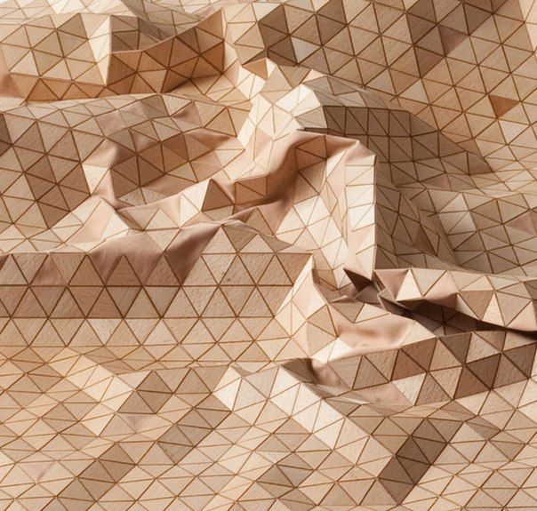
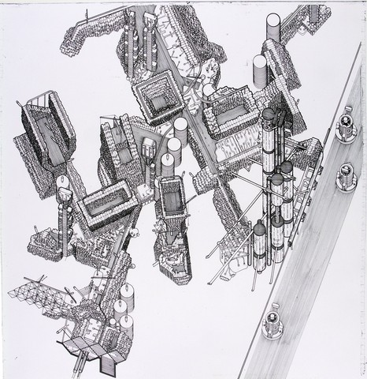

¿Cómo puedo transformar el comportamiento de un material en reglas que generen geometrías?
Esta pregunta está relacionada con la investigación que estamos haciendo en el MCD.
COMPUTACIÓN AVANZADA · MCD UAI
Arquitecta, docente y ceramista. Exploro el encuentro entre representación, materialidad y nuevas tecnologías.
01
Mi trabajo se mueve principalmente entre la arquitectura, la representación, la enseñanza y la exploración de la cerámica como material.
Actualmente hago clases en arquitectura y diseño, principalmente en representación y herramientas digitales. En paralelo trabajo con cerámica, donde me interesa mezclar procesos manuales con nuevas herramientas y tecnologías.
Últimamente he empezado a interesarme por la fabricación digital y la impresión 3D vinculadas a la cerámica y la arquitectura. Es un área en la que todavía estoy comenzando y que me gustaría seguir explorando.
02
Quiero aprender a utilizar la programación y el diseño computacional como nuevas herramientas dentro de mi proceso de diseño.
Me interesa entender cómo trabajar con datos, reglas y parámetros para generar geometrías y eventualmente relacionarlas con procesos de fabricación.
03
04
¿Cómo puedo transformar el comportamiento de un material en reglas que generen geometrías?
Esta pregunta está relacionada con la investigación que estamos haciendo en el MCD.
¿Cómo puedo transformar información de elementos naturales en reglas para generar geometrías?
Me interesa observar elementos de la naturaleza, reconocer patrones, medidas, repeticiones o variaciones y entender cómo esa información se puede transformar en nuevas formas geométricas.
05
Me interesa el cruce entre arquitectura, cerámica y tecnología.
Sobre todo los proyectos donde la forma aparece a partir de la experimentación con un material, una regla o un proceso, y no solamente desde una forma diseñada previamente.
Estoy comenzando a explorar referentes relacionados con fabricación digital, impresión 3D y diseño computacional, buscando entender cómo estas herramientas pueden incorporarse a mi trabajo con cerámica y arquitectura.

